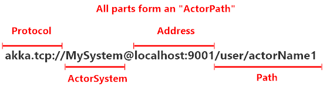

Location Transparency
You might have noticed looking at some of the Akka.NET documentation that when you create an instance of an actor you defined, you get an IActorRef instance back instead of an instance of your actor type. FooActor or whatever.
The reason for this is simple - you never send a message to an actor instance directly. You do it through an "actor reference," implemented via the
IActorRefinterface.
This is because actor references have the ability to add location transparency to your actors - an important concept that enables Akka.NET applications to be easily distributed over a network of computers.
Real-world examples of location transparency
Location transparency is a concept that you already use constantly in your everyday life. Here's some examples:
- Phone numbers
- Email addresses
- URLs
Quoted from Beyond HTTP: "What is an Actor?"
What location transparency means is that whenever you send a message to an actor, you don't need to know where they are within an actor system, which might span hundreds of computers. You just have to know that actors' address.
Think of it like calling someone's cell phone number - you don't need to know that your friend Bob is in Seattle, Washington, USA in order to place a call to them. You just need to dial Bob's cell phone number and your cellular network provider will take care of the rest.
Actor references and actor addresses
Quoted from Beyond HTTP: "What is an Actor?"
Actors work just the same way - in Akka.NET every actor has an address that contains the following parts:

- Protocol - just like how you can have HTTP and HTTPS on the web, Akka.NET supports multiple transport protocols for inter-process communication. The default protocol for single-process actor systems is just
akka://. If you're using remoting or clustering, you'll typically use a socket transport likeakka.tcp://orakka.udp://to communicate between nodes. - ActorSystem - every
ActorSysteminstance in Akka.NET has to be given a name upon startup, and that name can be shared by multiple processes or machines that are all participating in a distributedActorSystem. - Address - if you're not using remoting, then the address portion of an
ActorPathcan be omitted. But this is used to convey specific IP address / domain name and port information used for remote communication between actor systems. - Path - this is the path to a specific actor at an address. It's structure just like a URL path for a website, with all user-defined actors stemming off of the
/user/root actor.
However, this detail of the actor's address is made transparent to you by the actor reference. An
IActorRefbelonging to a remote system looks exactly the same to you as anIActorRefcreated inside the current process.
Therefore your Akka.NET application code doesn't have to differentiate between local and remote actors - that's handled transparently for you by the Akka.NET framework. This is what we mean by "location transparency."